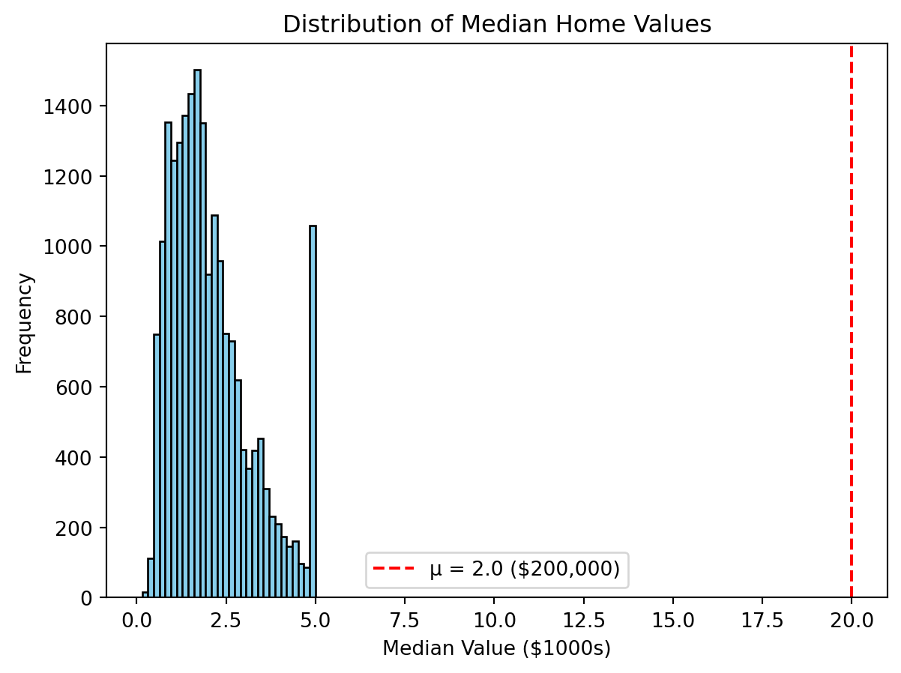
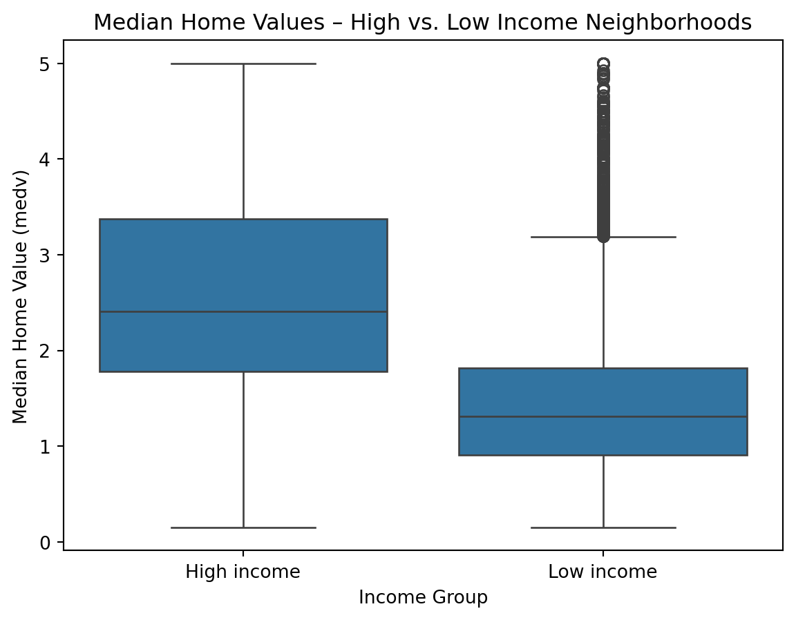
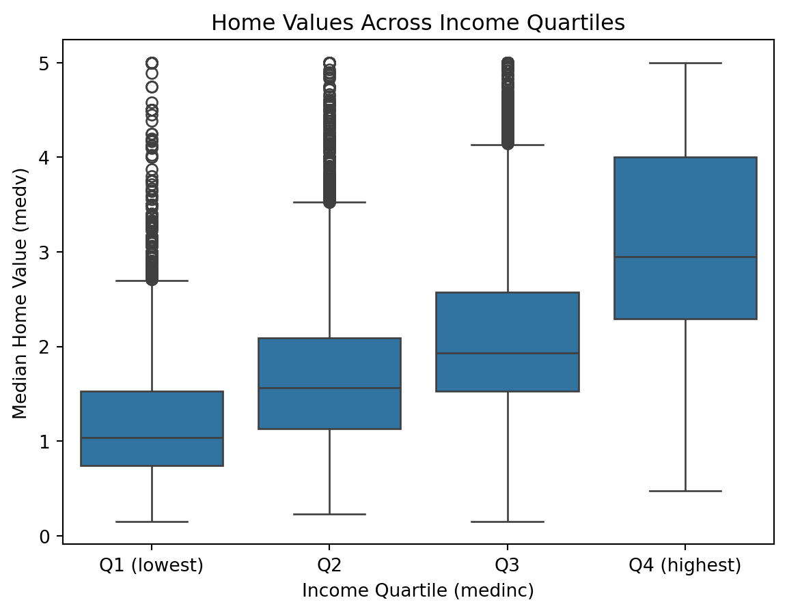
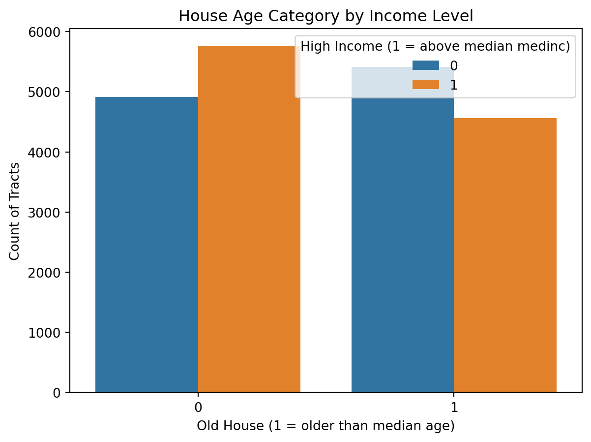
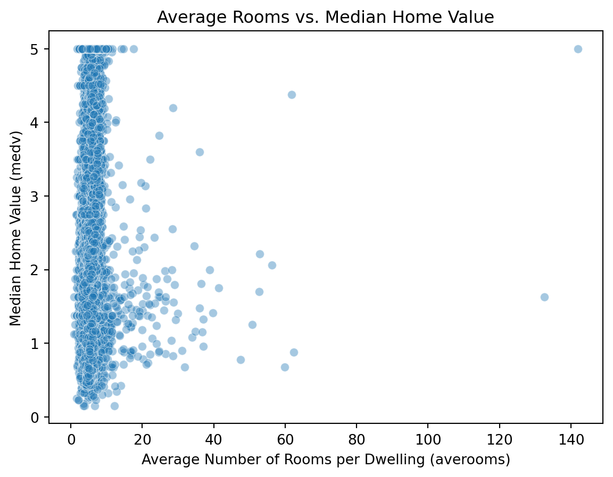

import openml
# Load Ames Housing (OpenML ID 42165)
dataset = openml.datasets.get_dataset(42165)
df, *_ = dataset.get_data()
# Basic dimensions
df.shape(1460, 81)Data exploration is the disciplined process that connects raw records to credible analysis. Its goals are to identify data quality issues, understand what variables mean operationally, and generate falsifiable claims that later analysis can scrutinize. The work is iterative: initial checks surface inconsistencies or gaps; targeted cleaning follows; then renewed examination tests whether earlier conclusions still hold. Reproducibility is non-negotiable, so every step should live in code with a brief log explaining what changed and why. Critically, this phase is not confirmatory inference. Instead, it frames questions clearly, proposes measurable definitions, and records assumptions that later sections will test formally. Scope of this chapter.
We will develop practical habits for high-quality exploration. First, we present cleaning principles: consistency of formats and units, completeness and missing-data mechanisms, accuracy and duplicates, and integrity across related fields, together with clear documentation. Next, we practice numerically driven summaries: distributional statistics, grouped descriptives, cross-tabulations, and simple association checks that reveal promising relationships. Finally, we show how to state hypotheses correctly—with the null representing no effect or independence—and run appropriate tests in Python (ANOVA or Kruskal–Wallis for group means, Welch’s t-test or Mann–Whitney for two groups, OLS slope tests with robust errors, and Pearson or Spearman correlations), pairing p-values with effect sizes and intervals.
Any analysis begins by becoming familiar with the dataset. This involves learning what the observations represent, what types of variables are recorded, and whether the structure meets the expectations of tidy data. Before turning to a specific example, we highlight general principles.
Units of observation. Each row of a dataset should correspond to a single unit, such as an individual, transaction, or property sale. Misalignment of units often leads to errors in later analysis.
Variables and their types. Columns record attributes of units. These may be continuous measurements, counts, ordered categories, or nominal labels. Recognizing the correct type is essential because it dictates which summary statistics and hypothesis tests are appropriate.
Tidy data principles. In a tidy format, each row is one observation and each column is one variable. When data are stored otherwise, reshaping is necessary before analysis can proceed smoothly.
We now illustrate these ideas using a reduced version of the Ames Housing dataset (De Cock, 2009), which is available directly from OpenML. With a filtered subset of ~1460 observations, it drops older sales, keeps only certain years, and removes some variables to make modeling cleaner for beginners.
import openml
# Load Ames Housing (OpenML ID 42165)
dataset = openml.datasets.get_dataset(42165)
df, *_ = dataset.get_data()
# Basic dimensions
df.shape(1460, 81)The dataset contains nearly three thousand house sales and eighty variables.
It is useful to view the first few rows to confirm the structure.
# First few rows
df.head()| Id | MSSubClass | MSZoning | LotFrontage | LotArea | Street | Alley | LotShape | LandContour | Utilities | ... | PoolArea | PoolQC | Fence | MiscFeature | MiscVal | MoSold | YrSold | SaleType | SaleCondition | SalePrice | |
|---|---|---|---|---|---|---|---|---|---|---|---|---|---|---|---|---|---|---|---|---|---|
| 0 | 1 | 60 | RL | 65.0 | 8450 | Pave | None | Reg | Lvl | AllPub | ... | 0 | None | None | None | 0 | 2 | 2008 | WD | Normal | 208500 |
| 1 | 2 | 20 | RL | 80.0 | 9600 | Pave | None | Reg | Lvl | AllPub | ... | 0 | None | None | None | 0 | 5 | 2007 | WD | Normal | 181500 |
| 2 | 3 | 60 | RL | 68.0 | 11250 | Pave | None | IR1 | Lvl | AllPub | ... | 0 | None | None | None | 0 | 9 | 2008 | WD | Normal | 223500 |
| 3 | 4 | 70 | RL | 60.0 | 9550 | Pave | None | IR1 | Lvl | AllPub | ... | 0 | None | None | None | 0 | 2 | 2006 | WD | Abnorml | 140000 |
| 4 | 5 | 60 | RL | 84.0 | 14260 | Pave | None | IR1 | Lvl | AllPub | ... | 0 | None | None | None | 0 | 12 | 2008 | WD | Normal | 250000 |
5 rows × 81 columns
Each row corresponds to one property sale, while columns record attributes such as lot size, neighborhood, and sale price.
Understanding whether variables are numeric, categorical, or temporal guides later exploration and cleaning.
# Dtypes in pandas
df.dtypes.value_counts()object 43
int64 22
uint8 13
float64 3
Name: count, dtype: int64# Example: show a few variables with types
df.dtypes.head(10)Id int64
MSSubClass uint8
MSZoning object
LotFrontage float64
LotArea int64
Street object
Alley object
LotShape object
LandContour object
Utilities object
dtype: objectMost features are numeric or categorical. Some, such as YearBuilt, are integers but represent calendar years.
The outcome of interest is the sale price.
# The default target from OpenML
dataset.default_target_attribute'SalePrice'Numeric summaries highlight scale and possible outliers.
# Summary statistics for numeric columns
df.describe().T.head(10)| count | mean | std | min | 25% | 50% | 75% | max | |
|---|---|---|---|---|---|---|---|---|
| Id | 1460.0 | 730.500000 | 421.610009 | 1.0 | 365.75 | 730.5 | 1095.25 | 1460.0 |
| MSSubClass | 1460.0 | 56.897260 | 42.300571 | 20.0 | 20.00 | 50.0 | 70.00 | 190.0 |
| LotFrontage | 1201.0 | 70.049958 | 24.284752 | 21.0 | 59.00 | 69.0 | 80.00 | 313.0 |
| LotArea | 1460.0 | 10516.828082 | 9981.264932 | 1300.0 | 7553.50 | 9478.5 | 11601.50 | 215245.0 |
| OverallQual | 1460.0 | 6.099315 | 1.382997 | 1.0 | 5.00 | 6.0 | 7.00 | 10.0 |
| OverallCond | 1460.0 | 5.575342 | 1.112799 | 1.0 | 5.00 | 5.0 | 6.00 | 9.0 |
| YearBuilt | 1460.0 | 1971.267808 | 30.202904 | 1872.0 | 1954.00 | 1973.0 | 2000.00 | 2010.0 |
| YearRemodAdd | 1460.0 | 1984.865753 | 20.645407 | 1950.0 | 1967.00 | 1994.0 | 2004.00 | 2010.0 |
| MasVnrArea | 1452.0 | 103.685262 | 181.066207 | 0.0 | 0.00 | 0.0 | 166.00 | 1600.0 |
| BsmtFinSF1 | 1460.0 | 443.639726 | 456.098091 | 0.0 | 0.00 | 383.5 | 712.25 | 5644.0 |
Categorical summaries reveal balance among levels.
# Frequency counts for categorical columns
df['Neighborhood'].value_counts().head()Neighborhood
NAmes 225
CollgCr 150
OldTown 113
Edwards 100
Somerst 86
Name: count, dtype: int64# Another example
df['GarageType'].value_counts(dropna=False)GarageType
Attchd 870
Detchd 387
BuiltIn 88
None 81
Basment 19
CarPort 9
2Types 6
Name: count, dtype: int64Simple checks can detect implausible combinations.
# Houses should not be sold before built
(df['YrSold'] < df['YearBuilt']).sum()np.int64(0)# Garage year built should not precede house year built
(df['GarageYrBlt'] < df['YearBuilt']).sum()np.int64(9)These checks confirm that while the dataset is well curated, certain quirks require careful interpretation.
Exploration begins with data cleaning. The purpose is not to modify values casually but to identify issues, understand their sources, and decide on a transparent response. The following principles provide structure.
Consistency. Variables should follow the same format and unit across all records. Dates should have a common representation, categorical labels should not differ by spelling, and measurements should use the same scale.
Completeness. Missing values are unavoidable. It is important to determine whether they arise from data entry errors, survey nonresponse, or structural absence. For example, a missing value in FireplaceQu often indicates that a house has no fireplace rather than missing information.
Accuracy. Values should be plausible. Obvious errors include negative square footage or sale years in the future. Duplicate records also fall under this category.
Integrity. Relationships between variables should be logically consistent. A house cannot be sold before it was built. If related totals exist, the sum of parts should match the total.
Transparency. All cleaning decisions should be recorded. Reproducibility requires that another analyst can understand what was changed and why.
We apply these principles to the Ames dataset. The first step is to inspect missing values.
# Count missing values in each column
df.isna().sum().sort_values(ascending=False).head(15)PoolQC 1453
MiscFeature 1406
Alley 1369
Fence 1179
FireplaceQu 690
LotFrontage 259
GarageFinish 81
GarageQual 81
GarageYrBlt 81
GarageType 81
GarageCond 81
BsmtExposure 38
BsmtFinType2 38
BsmtCond 37
BsmtFinType1 37
dtype: int64Several variables, such as PoolQC, MiscFeature, and Alley, contain many missing entries. Documentation shows that these are structural, indicating the absence of the feature.
# Example: check PoolQC against PoolArea
(df['PoolQC'].isna() & (df['PoolArea'] > 0)).sum()np.int64(0)The result is zero, confirming that missing PoolQC means no pool.
Consistency can be checked by reviewing categorical labels.
# Distinct values in Exterior1st
df['Exterior1st'].unique()array(['VinylSd', 'MetalSd', 'Wd Sdng', 'HdBoard', 'BrkFace', 'WdShing',
'CemntBd', 'Plywood', 'AsbShng', 'Stucco', 'BrkComm', 'AsphShn',
'Stone', 'ImStucc', 'CBlock'], dtype=object)If spelling variants are detected, they should be harmonized.
Accuracy checks involve searching for implausible values.
# Negative or zero living area
(df['GrLivArea'] <= 0).sum()np.int64(0)Integrity checks verify logical relationships.
# Houses sold before they were built
(df['YrSold'] < df['YearBuilt']).sum()np.int64(0)# Garage built before house built
(df['GarageYrBlt'] < df['YearBuilt']).sum()np.int64(9)These checks help identify issues to document and, if appropriate, correct in a reproducible way.
After establishing data cleaning principles, the next step is to compute summaries that describe the distributions of variables and their relationships. This section avoids graphics, relying instead on tables and statistics.
Simple statistics reveal scale, central tendency, and variability.
# Sale price distribution
df['SalePrice'].describe()count 1460.000000
mean 180921.195890
std 79442.502883
min 34900.000000
25% 129975.000000
50% 163000.000000
75% 214000.000000
max 755000.000000
Name: SalePrice, dtype: float64The sale price is right-skewed, with a mean higher than the median.
# Lot area distribution
df['LotArea'].describe()count 1460.000000
mean 10516.828082
std 9981.264932
min 1300.000000
25% 7553.500000
50% 9478.500000
75% 11601.500000
max 215245.000000
Name: LotArea, dtype: float64Lot size shows extreme variation, indicating possible outliers.
Comparisons across categories highlight differences in central tendency.
# Mean sale price by neighborhood
df.groupby('Neighborhood')['SalePrice'].mean().sort_values().head()Neighborhood
MeadowV 98576.470588
IDOTRR 100123.783784
BrDale 104493.750000
BrkSide 124834.051724
Edwards 128219.700000
Name: SalePrice, dtype: float64Neighborhoods differ substantially in average sale price.
# Median sale price by overall quality
df.groupby('OverallQual')['SalePrice'].median()OverallQual
1 50150.0
2 60000.0
3 86250.0
4 108000.0
5 133000.0
6 160000.0
7 200141.0
8 269750.0
9 345000.0
10 432390.0
Name: SalePrice, dtype: float64Higher quality ratings correspond to higher prices.
Cross-tabulations summarize associations between categorical variables.
import pandas as pd
# Neighborhood by garage type
pd.crosstab(df['Neighborhood'], df['GarageType']).head()| GarageType | 2Types | Attchd | Basment | BuiltIn | CarPort | Detchd |
|---|---|---|---|---|---|---|
| Neighborhood | ||||||
| Blmngtn | 0 | 17 | 0 | 0 | 0 | 0 |
| Blueste | 0 | 2 | 0 | 0 | 0 | 0 |
| BrDale | 0 | 2 | 0 | 0 | 0 | 13 |
| BrkSide | 0 | 3 | 0 | 1 | 0 | 44 |
| ClearCr | 0 | 24 | 0 | 1 | 0 | 2 |
Some garage types are common only in specific neighborhoods.
Correlation coefficients capture linear associations between numeric variables.
# Correlation between living area and sale price
df[['GrLivArea','SalePrice']].corr()| GrLivArea | SalePrice | |
|---|---|---|
| GrLivArea | 1.000000 | 0.708624 |
| SalePrice | 0.708624 | 1.000000 |
# Correlation between lot area and sale price
df[['LotArea','SalePrice']].corr()| LotArea | SalePrice | |
|---|---|---|
| LotArea | 1.000000 | 0.263843 |
| SalePrice | 0.263843 | 1.000000 |
Living area is strongly correlated with price, while lot area shows a weaker association.
Examining distributions within subgroups can surface interaction patterns.
# Average sale price by house style
df.groupby('HouseStyle')['SalePrice'].mean().sort_values()HouseStyle
1.5Unf 110150.000000
SFoyer 135074.486486
1.5Fin 143116.740260
2.5Unf 157354.545455
SLvl 166703.384615
1Story 175985.477961
2Story 210051.764045
2.5Fin 220000.000000
Name: SalePrice, dtype: float64House style is another factor associated with variation in price.
These practices provide a numerical portrait of the data, guiding later steps where hypotheses will be stated explicitly and tested with appropriate statistical methods.
Exploration becomes more rigorous when we state hypotheses formally and run appropriate tests. The null hypothesis always represents no effect, no difference, or no association. The alternative expresses the presence of an effect. The examples below use the Ames Housing data.
Hypothesis: - H0: The mean sale prices are equal across neighborhoods. - H1: At least one neighborhood has a different mean.
import statsmodels.formula.api as smf
from statsmodels.stats.anova import anova_lm
sub = df[['SalePrice','Neighborhood']].dropna()
model = smf.ols('SalePrice ~ C(Neighborhood)', data=sub).fit()
anova_lm(model, typ=2)| sum_sq | df | F | PR(>F) | |
|---|---|---|---|---|
| C(Neighborhood) | 5.023606e+12 | 24.0 | 71.784865 | 1.558600e-225 |
| Residual | 4.184305e+12 | 1435.0 | NaN | NaN |
ANOVA tests equality of group means. If significant, post-hoc comparisons can identify which neighborhoods differ.
Hypothesis: - H0: The slope for YearBuilt is zero; no linear relationship. - H1: The slope is not zero.
model = smf.ols('SalePrice ~ YearBuilt', data=df).fit(cov_type='HC3')
model.summary().tables[1]| coef | std err | z | P>|z| | [0.025 | 0.975] | |
|---|---|---|---|---|---|---|
| Intercept | -2.53e+06 | 1.36e+05 | -18.667 | 0.000 | -2.8e+06 | -2.26e+06 |
| YearBuilt | 1375.3735 | 68.973 | 19.941 | 0.000 | 1240.189 | 1510.558 |
The regression slope test checks whether newer houses tend to sell for more.
Hypothesis: - H0: The population correlation is zero. - H1: The correlation is not zero.
from scipy import stats
sub = df[['LotArea','SalePrice']].dropna()
stats.pearsonr(sub['LotArea'], sub['SalePrice'])PearsonRResult(statistic=np.float64(0.2638433538714058), pvalue=np.float64(1.123139154918551e-24))A Pearson correlation tests linear association. A Spearman rank correlation can be used when distributions are skewed.
Hypothesis: - H0: The mean sale price is the same for houses with and without a fireplace. - H1: The mean sale prices differ.
sub = df[['SalePrice','Fireplaces']].dropna()
sub['has_fp'] = (sub['Fireplaces'] > 0).astype(int)
g1 = sub.loc[sub['has_fp']==1, 'SalePrice']
g0 = sub.loc[sub['has_fp']==0, 'SalePrice']
stats.ttest_ind(g1, g0, equal_var=False)TtestResult(statistic=np.float64(21.105376324953664), pvalue=np.float64(4.666259945494159e-84), df=np.float64(1171.6295727321062))Welch’s t-test compares means when variances differ.
Hypothesis: - H0: Garage type and neighborhood are independent. - H1: Garage type and neighborhood are associated.
import pandas as pd
ct = pd.crosstab(df['GarageType'], df['Neighborhood'])
stats.chi2_contingency(ct)Chi2ContingencyResult(statistic=np.float64(794.6871326886048), pvalue=np.float64(5.179037846292559e-100), dof=120, expected_freq=array([[7.39666425e-02, 8.70195794e-03, 6.52646846e-02, 2.08846991e-01,
1.17476432e-01, 6.43944888e-01, 2.21899927e-01, 3.39376360e-01,
3.43727339e-01, 1.26178390e-01, 5.22117476e-02, 1.91443075e-01,
9.52864394e-01, 3.91588107e-02, 3.17621465e-01, 1.78390138e-01,
3.35025381e-01, 4.39448876e-01, 8.70195794e-02, 3.08919507e-01,
2.52356780e-01, 3.74184191e-01, 1.08774474e-01, 1.65337201e-01,
4.78607687e-02],
[1.07251632e+01, 1.26178390e+00, 9.46337926e+00, 3.02828136e+01,
1.70340827e+01, 9.33720087e+01, 3.21754895e+01, 4.92095722e+01,
4.98404641e+01, 1.82958666e+01, 7.57070341e+00, 2.77592458e+01,
1.38165337e+02, 5.67802756e+00, 4.60551124e+01, 2.58665700e+01,
4.85786802e+01, 6.37200870e+01, 1.26178390e+01, 4.47933285e+01,
3.65917331e+01, 5.42567078e+01, 1.57722988e+01, 2.39738941e+01,
6.93981146e+00],
[2.34227701e-01, 2.75562001e-02, 2.06671501e-01, 6.61348803e-01,
3.72008702e-01, 2.03915881e+00, 7.02683104e-01, 1.07469181e+00,
1.08846991e+00, 3.99564902e-01, 1.65337201e-01, 6.06236403e-01,
3.01740392e+00, 1.24002901e-01, 1.00580131e+00, 5.64902103e-01,
1.06091371e+00, 1.39158811e+00, 2.75562001e-01, 9.78245105e-01,
7.99129804e-01, 1.18491661e+00, 3.44452502e-01, 5.23567803e-01,
1.51559101e-01],
[1.08484409e+00, 1.27628716e-01, 9.57215373e-01, 3.06308920e+00,
1.72298767e+00, 9.44452502e+00, 3.25453227e+00, 4.97751994e+00,
5.04133430e+00, 1.85061639e+00, 7.65772299e-01, 2.80783176e+00,
1.39753445e+01, 5.74329224e-01, 4.65844815e+00, 2.61638869e+00,
4.91370558e+00, 6.44525018e+00, 1.27628716e+00, 4.53081943e+00,
3.70123278e+00, 5.48803481e+00, 1.59535896e+00, 2.42494561e+00,
7.01957941e-01],
[1.10949964e-01, 1.30529369e-02, 9.78970268e-02, 3.13270486e-01,
1.76214648e-01, 9.65917331e-01, 3.32849891e-01, 5.09064540e-01,
5.15591008e-01, 1.89267585e-01, 7.83176215e-02, 2.87164612e-01,
1.42929659e+00, 5.87382161e-02, 4.76432197e-01, 2.67585207e-01,
5.02538071e-01, 6.59173314e-01, 1.30529369e-01, 4.63379260e-01,
3.78535170e-01, 5.61276287e-01, 1.63161711e-01, 2.48005801e-01,
7.17911530e-02],
[4.77084844e+00, 5.61276287e-01, 4.20957215e+00, 1.34706309e+01,
7.57722988e+00, 4.15344453e+01, 1.43125453e+01, 2.18897752e+01,
2.21704133e+01, 8.13850616e+00, 3.36765772e+00, 1.23480783e+01,
6.14597534e+01, 2.52574329e+00, 2.04865845e+01, 1.15061639e+01,
2.16091371e+01, 2.83444525e+01, 5.61276287e+00, 1.99253082e+01,
1.62770123e+01, 2.41348803e+01, 7.01595359e+00, 1.06642495e+01,
3.08701958e+00]]))A chi-square test checks for association between two categorical variables.
| Situation | Null hypothesis | Test | Python tool |
|---|---|---|---|
| k-group mean comparison | All group means equal | One-way ANOVA | anova_lm |
| k-group, nonparametric | All group distributions equal | Kruskal–Wallis | stats.kruskal |
| Two means, unequal variance | Means equal | Welch’s t-test | stats.ttest_ind |
| Two groups, nonparametric | Distributions equal | Mann–Whitney U | stats.mannwhitneyu |
| Linear relationship | Slope = 0 | OLS slope test | ols + robust SE |
| Continuous association | Correlation = 0 | Pearson correlation | stats.pearsonr |
| Monotone association | Correlation = 0 | Spearman correlation | stats.spearmanr |
| Categorical association | Independence | Chi-square test | stats.chi2_contingency |
These examples illustrate how hypotheses guide exploration. Each test produces a statistic, a p-value, and often an effect size. Results are provisional and informal, but they shape which relationships merit deeper investigation.
Exploration is rarely linear. Cleaning, summarizing, and testing feed back into each other. Each new discovery can prompt a return to earlier steps.
Initial inspection may suggest that many values of GarageYrBlt are missing. Documentation indicates that missing means no garage.
# Count missing garage years
df['GarageYrBlt'].isna().sum()np.int64(81)When checking integrity, we may notice that some garage years precede the house year built.
# Garage built before house built
(df['GarageYrBlt'] < df['YearBuilt']).sum()np.int64(9)This prompts a decision: treat as data entry error, keep with caution, or exclude in certain analyses.
A strong correlation between GrLivArea and SalePrice may surface.
# Correlation
sub = df[['GrLivArea','SalePrice']].dropna()
sub.corr()| GrLivArea | SalePrice | |
|---|---|---|
| GrLivArea | 1.000000 | 0.708624 |
| SalePrice | 0.708624 | 1.000000 |
If a few extremely large houses are driving the correlation, it may be necessary to investigate further.
# Identify extreme values
sub[sub['GrLivArea'] > 4000][['GrLivArea','SalePrice']]| GrLivArea | SalePrice | |
|---|---|---|
| 523 | 4676 | 184750 |
| 691 | 4316 | 755000 |
| 1182 | 4476 | 745000 |
| 1298 | 5642 | 160000 |
These observations may be genuine luxury properties, or they may distort summary statistics. The decision is context-dependent and should be documented.
Exploration is not a one-pass process. Findings in one step often require revisiting previous steps. Clear documentation ensures that these iterations are transparent and reproducible.
Clear habits in exploration make later analysis more reliable and easier to share. The following practices help ensure quality and reproducibility.
# Example: set a random seed for reproducibility
import numpy as np
np.random.seed(20250923)PoolQC means no pool.# Example: create an indicator for presence of a pool
df['HasPool'] = df['PoolArea'] > 0# Example: compute Cohen's d for fireplace vs no fireplace
sub = df[['SalePrice','Fireplaces']].dropna()
sub['has_fp'] = (sub['Fireplaces'] > 0).astype(int)
mean_diff = sub.groupby('has_fp')['SalePrice'].mean().diff().iloc[-1]
pooled_sd = sub.groupby('has_fp')['SalePrice'].std().mean()
cohens_d = mean_diff / pooled_sd
cohens_dnp.float64(1.144008229281349)Good practices keep exploration structured and reproducible. They also create a record of reasoning that improves collaboration and supports later analysis.
This section was prepared by Jessica Yoon, an undergraduate senior pursuing a degree in Biological Data Science.
# Step 1: import essential packages for analysis and visualization
import pandas as pd # used for data manipulation and structuring data
import numpy as np # supports numerical operations
from scipy import stats # provides statistical operations
import matplotlib.pyplot as plt # visualizations
import seaborn as sns # visualizations
from sklearn.datasets import fetch_california_housing
# Step 2: Load dataset from csv
cal = fetch_california_housing(as_frame=True)
housing = cal.frame
housing = housing.rename(columns={"MedHouseVal": "medv"})# Step 1: Clean up column names
housing.columns = (
housing.columns
.str.strip() # remove leading/trailing spaces
.str.lower() # convert to lowercase
.str.replace(' ', '_') # replace spaces with underscores
.str.replace('[^a-z0-9_]', '', regex=True) # remove special chars
)
# Step 2: Drop columns that are completely empty (all NaN)
housing = housing.dropna(axis=1, how='all')
# Step 3: Drop rows with any missing values
housing = housing.dropna(axis=0, how='any')
# Step 4: Verify the cleaned dataset
housing.info()
housing.head()<class 'pandas.core.frame.DataFrame'>
RangeIndex: 20640 entries, 0 to 20639
Data columns (total 9 columns):
# Column Non-Null Count Dtype
--- ------ -------------- -----
0 medinc 20640 non-null float64
1 houseage 20640 non-null float64
2 averooms 20640 non-null float64
3 avebedrms 20640 non-null float64
4 population 20640 non-null float64
5 aveoccup 20640 non-null float64
6 latitude 20640 non-null float64
7 longitude 20640 non-null float64
8 medv 20640 non-null float64
dtypes: float64(9)
memory usage: 1.4 MB| medinc | houseage | averooms | avebedrms | population | aveoccup | latitude | longitude | medv | |
|---|---|---|---|---|---|---|---|---|---|
| 0 | 8.3252 | 41.0 | 6.984127 | 1.023810 | 322.0 | 2.555556 | 37.88 | -122.23 | 4.526 |
| 1 | 8.3014 | 21.0 | 6.238137 | 0.971880 | 2401.0 | 2.109842 | 37.86 | -122.22 | 3.585 |
| 2 | 7.2574 | 52.0 | 8.288136 | 1.073446 | 496.0 | 2.802260 | 37.85 | -122.24 | 3.521 |
| 3 | 5.6431 | 52.0 | 5.817352 | 1.073059 | 558.0 | 2.547945 | 37.85 | -122.25 | 3.413 |
| 4 | 3.8462 | 52.0 | 6.281853 | 1.081081 | 565.0 | 2.181467 | 37.85 | -122.25 | 3.422 |
housing.describe()
housing["medv"]0 4.526
1 3.585
2 3.521
3 3.413
4 3.422
...
20635 0.781
20636 0.771
20637 0.923
20638 0.847
20639 0.894
Name: medv, Length: 20640, dtype: float64prices = housing["medv"].dropna()
t_stat, p_value = stats.ttest_1samp(prices, popmean=2.0)
t_stat, p_value(np.float64(8.535417086565511), np.float64(1.4916238327737253e-17))alpha = 0.05
if p_value < alpha:
print(f"Reject $H_0 (p = {p_value:.3f}) → Mean home value differs from $200,000.")
else:
print(f"Fail to reject $H_0 (p = {p_value:.3f}) → No difference from $200,000.")Reject $H_0 (p = 0.000) → Mean home value differs from $200,000.The output (8.54, 1.49e-17) corresponds to the t-statistic and p-value
The t-statistic means that the sample is roughly 6 standard errors away from the hypothesized population mean of $200,000
The p-value is extremely small, far below the 0.05 significance threshold
We can conclude that the mean home value is significantly different from $20,000 and we reject the null hypothesis. The average housing prices are not centered around $200,000
We can also visualize this by using a histogram
plt.hist(prices, bins=30, color="skyblue", edgecolor="black")
plt.axvline(20, color="red", linestyle="--", label="μ = 2.0 ($200,000)")
plt.title("Distribution of Median Home Values")
plt.xlabel("Median Value ($1000s)")
plt.ylabel("Frequency")
plt.legend()
plt.show()
Notice how most homes cluster below the hypothesized mean value, shown by the red dashed line at μ = 2.0 ($200,000).
Most home fall to the left of this line, showing that the actual mean is significantly higher than $200,000, which is consistent with the t-test result
If the data were not normally distributed, meaning the data was skewed or had outliers, we’d use the Wilcoxon Signed-Rank Test instead.
The Wilcoxon Signed-Rank Test compares the median of the sample to a hypothesized value.
\(H_0\): median home value = $200{,}000
\(H_1\): median home value \(\ne\) $200{,}000
from scipy.stats import wilcoxon
prices = housing["medv"].dropna()
w_stat, p_value = wilcoxon(prices - 2.0, alternative="two-sided")
w_stat, p_value(np.float64(99446113.5), np.float64(1.1542596775842864e-14))alpha = 0.05
if p_value < alpha:
print(f"Reject $H_0$ (p = {p_value:.4f}) → Median home value differs from $200,000.")
else:
print(f"Fail to reject $H_0$ (p = {p_value:.4f}) → No evidence of a difference from $200,000.")Reject $H_0$ (p = 0.0000) → Median home value differs from $200,000.housing = housing.rename(columns={
"MedInc": "medinc",
"MedHouseVal": "medv",
})
income_median = housing["medinc"].median()
high_income = housing[housing["medinc"] > income_median]["medv"].dropna()
low_income = housing[housing["medinc"] <= income_median]["medv"].dropna()
t_stat, p_value = stats.ttest_ind(high_income, low_income, equal_var=False)
print(f"T-statistic: {t_stat:.3f}, P-value: {p_value:.4f}")T-statistic: 86.363, P-value: 0.0000alpha = 0.05
if p_value < alpha:
print(f"Reject $H_0 (p = {p_value:.4f}) → Mean home values differ.")
else:
print(f"Fail to reject $H_0 (p = {p_value:.4f}) → No difference in mean home values.")Reject $H_0 (p = 0.0000) → Mean home values differ.ttest_ind() compares means of two independent groups
equal_var=False: Welch’s t-test version, which doesn’t assume equal variances
We can visualize these differences using boxplots
The boxes represent interquartile ranges, so if they barely overlap that’s a visual clue of statistical difference
housing["income_group"] = np.where(housing["medinc"] > income_median,
"High income",
"Low income")
sns.boxplot(x="income_group", y="medv", data=housing)
plt.title("Median Home Values – High vs. Low Income Neighborhoods")
plt.xlabel("Income Group")
plt.ylabel("Median Home Value (medv)")
plt.show()
from scipy import stats
stat, p_value = stats.mannwhitneyu(high_income, low_income, alternative="two-sided")
print(f"Mann-Whitney U statistic: {stat:.3f}, P-value: {p_value:.4f}")
alpha = 0.05
if p_value < alpha:
print(f"Reject $H_0$ (p = {p_value:.4f}) → "f"Median home values differ between income groups.")
else:
print(f"Fail to reject $H_0$ (p = {p_value:.4f}) → " f"No difference in median home values by income group.")Mann-Whitney U statistic: 87648425.000, P-value: 0.0000
Reject $H_0$ (p = 0.0000) → Median home values differ between income groups.housing["income_quartile"] = pd.qcut(
housing["medinc"],
q=4,
labels=["Q1 (lowest)", "Q2", "Q3", "Q4 (highest)"]
)
groups = [group["medv"].dropna() for _, group in housing.groupby("income_quartile")]
f_stat, p_value = stats.f_oneway(*groups)
print(f"F-statistic: {f_stat:.3f}, P-value: {p_value:.4f}")
alpha = 0.05
if p_value < alpha:
print(f"Reject $H_0$ (p = {p_value:.4f}) → " f"Mean home values differ across income quartiles.")
else:
print(f"Fail to reject $H_0$ (p = {p_value:.4f}) → " f"No difference in mean home values across income quartiles.")F-statistic: 4277.066, P-value: 0.0000
Reject $H_0$ (p = 0.0000) → Mean home values differ across income quartiles./var/folders/cq/5ysgnwfn7c3g0h46xyzvpj800000gn/T/ipykernel_8983/3497753232.py:7: FutureWarning:
The default of observed=False is deprecated and will be changed to True in a future version of pandas. Pass observed=False to retain current behavior or observed=True to adopt the future default and silence this warning.
f_oneway() performs the one-way ANOVA test
To see this visually:
sns.boxplot(x="income_quartile", y="medv", data=housing)
plt.title("Home Values Across Income Quartiles")
plt.xlabel("Income Quartile (medinc)")
plt.ylabel("Median Home Value (medv)")
plt.show()
groups = [group["medv"].dropna() for _, group in housing.groupby("income_quartile")]
h_stat, p_value = stats.kruskal(*groups)
print(f"H-statistic: {h_stat:.3f}, P-value: {p_value:.4f}")
alpha = 0.05
if p_value < alpha:
print(f"Reject $H_0$ (p = {p_value:.4f}) → " f"Median home values differ across income quartiles.")
else:
print(f"Fail to reject $H_0$ (p = {p_value:.4f}) → "f"No difference in median home values across income quartiles.")H-statistic: 8726.603, P-value: 0.0000
Reject $H_0$ (p = 0.0000) → Median home values differ across income quartiles./var/folders/cq/5ysgnwfn7c3g0h46xyzvpj800000gn/T/ipykernel_8983/3871825430.py:1: FutureWarning:
The default of observed=False is deprecated and will be changed to True in a future version of pandas. Pass observed=False to retain current behavior or observed=True to adopt the future default and silence this warning.
housing = housing.rename(columns={
"MedInc": "medinc",
"HouseAge": "houseage"
})
income_median = housing["medinc"].median()
age_median = housing["houseage"].median()
housing["high_income"] = np.where(housing["medinc"] > income_median, 1, 0)
housing["old_house"] = np.where(housing["houseage"] > age_median, 1, 0)table = pd.crosstab(housing["high_income"], housing["old_house"])
chi2, p_value, dof, expected = stats.chi2_contingency(table)
print(f"Chi2 Statistic: {chi2:.3f}, P-value: {p_value:.4f}, Degrees of Freedom: {dof}")
alpha = 0.05
if p_value < alpha:
print(f"Reject $H_0$ (p = {p_value:.4f}) → " f"There is a significant association between income level and house age.")
else:
print(f"Fail to reject $H_0$ (p = {p_value:.4f}) → " f"No significant association between income level and house age.")Chi2 Statistic: 140.180, P-value: 0.0000, Degrees of Freedom: 1
Reject $H_0$ (p = 0.0000) → There is a significant association between income level and house age.pd.crosstab() creates a contingency table
chi2_contingency() tests independence of two categorical variables
Visual
sns.countplot(x="old_house", hue="high_income", data=housing)
plt.title("House Age Category by Income Level")
plt.xlabel("Old House (1 = older than median age)")
plt.ylabel("Count of Tracts")
plt.legend(title="High Income (1 = above median medinc)")
plt.show()
from statsmodels.stats.proportion import proportions_ztest
high_income_flag = housing["medinc"] >= 5.0
count = high_income_flag.sum()
nobs = len(housing)
p0 = 0.30
stat, p_value = proportions_ztest(count, nobs, value=p0, alternative="two-sided")
print(f"Z-statistic: {stat:.3f}, P-value: {p_value:.4f}")
alpha = 0.05
if p_value < alpha:
print("Reject $H_0$ → The proportion of high-income tracts differs from 30%.")
else:
print("Fail to reject $H_0$ → No significant difference from 30%.")Z-statistic: -28.351, P-value: 0.0000
Reject $H_0$ → The proportion of high-income tracts differs from 30%.x = housing["averooms"]
y = housing["medv"]
corr, p_value = stats.pearsonr(x, y)
print(f"Correlation coefficient (r): {corr:.3f}, P-value: {p_value:.4f}")
alpha = 0.05
if p_value < alpha:
print(f"Reject $H_0$ (p = {p_value:.4f}) → Significant linear correlation.")
else:
print(f"Fail to reject $H_0$ (p = {p_value:.4f}) → No significant linear correlation.")Correlation coefficient (r): 0.152, P-value: 0.0000
Reject $H_0$ (p = 0.0000) → Significant linear correlation.sns.scatterplot(x=housing["averooms"], y=housing["medv"], alpha=0.4)
plt.title("Average Rooms vs. Median Home Value")
plt.xlabel("Average Number of Rooms per Dwelling (averooms)")
plt.ylabel("Median Home Value (medv)")
plt.show()
x = housing["averooms"]
y = housing["medv"]
rho, p_value = stats.spearmanr(x, y)
print(f"Spearman’s rho: {rho:.3f}, P-value: {p_value:.4f}")
alpha = 0.05
if p_value < alpha:
print(f"Reject $H_0$ (p = {p_value:.4f}) → Significant monotonic relationship.")
else:
print(f"Fail to reject $H_0$ (p = {p_value:.4f}) → No significant monotonic relationship.")Spearman’s rho: 0.263, P-value: 0.0000
Reject $H_0$ (p = 0.0000) → Significant monotonic relationship.data = {
"Test": [
"One-sample t-test",
"Wilcoxon Signed-Rank Test",
"Two-sample t-test",
"Mann–Whitney U Test",
"ANOVA",
"Kruskal–Wallis Test",
"Chi-Square Test",
"Proportion Test (z-test)",
"Pearson Correlation",
"Spearman Correlation"
],
"Purpose": [
"Compare sample mean to a known value",
"Nonparametric alternative to one-sample t-test",
"Compare means between two independent groups",
"Nonparametric alternative to two-sample t-test",
"Compare means across 3+ groups",
"Nonparametric alternative to ANOVA",
"Test association between categorical variables",
"Compare observed vs expected proportions",
"Measure linear relationship between two continuous variables",
"Measure monotonic relationship between two continuous variables"
],
"Example": [
"Avg home value vs $200k",
"Median home value vs $200k",
"High- vs low-income neighborhoods",
"High- vs low-income neighborhoods",
"Home values across income quartiles",
"Home values across income quartiles",
"Income level vs house age category",
"Proportion of high-income tracts = 30%",
"Average rooms vs home value",
"Average rooms vs home value"
],
"Interpretation": [
"Is mean ≠ hypothesized value?",
"Is median ≠ hypothesized value?",
"Difference in group means",
"Difference in group medians",
"At least one mean differs",
"At least one median differs",
"Are the variables independent?",
"Is the proportion different from expected?",
"Is there a linear correlation?",
"Is there a monotonic correlation?"
]
}
df = pd.DataFrame(data)
df| Test | Purpose | Example | Interpretation | |
|---|---|---|---|---|
| 0 | One-sample t-test | Compare sample mean to a known value | Avg home value vs $200k | Is mean ≠ hypothesized value? |
| 1 | Wilcoxon Signed-Rank Test | Nonparametric alternative to one-sample t-test | Median home value vs $200k | Is median ≠ hypothesized value? |
| 2 | Two-sample t-test | Compare means between two independent groups | High- vs low-income neighborhoods | Difference in group means |
| 3 | Mann–Whitney U Test | Nonparametric alternative to two-sample t-test | High- vs low-income neighborhoods | Difference in group medians |
| 4 | ANOVA | Compare means across 3+ groups | Home values across income quartiles | At least one mean differs |
| 5 | Kruskal–Wallis Test | Nonparametric alternative to ANOVA | Home values across income quartiles | At least one median differs |
| 6 | Chi-Square Test | Test association between categorical variables | Income level vs house age category | Are the variables independent? |
| 7 | Proportion Test (z-test) | Compare observed vs expected proportions | Proportion of high-income tracts = 30% | Is the proportion different from expected? |
| 8 | Pearson Correlation | Measure linear relationship between two contin... | Average rooms vs home value | Is there a linear correlation? |
| 9 | Spearman Correlation | Measure monotonic relationship between two con... | Average rooms vs home value | Is there a monotonic correlation? |
SciPy.stats Documentation: https://docs.scipy.org/doc/scipy/reference/stats.html